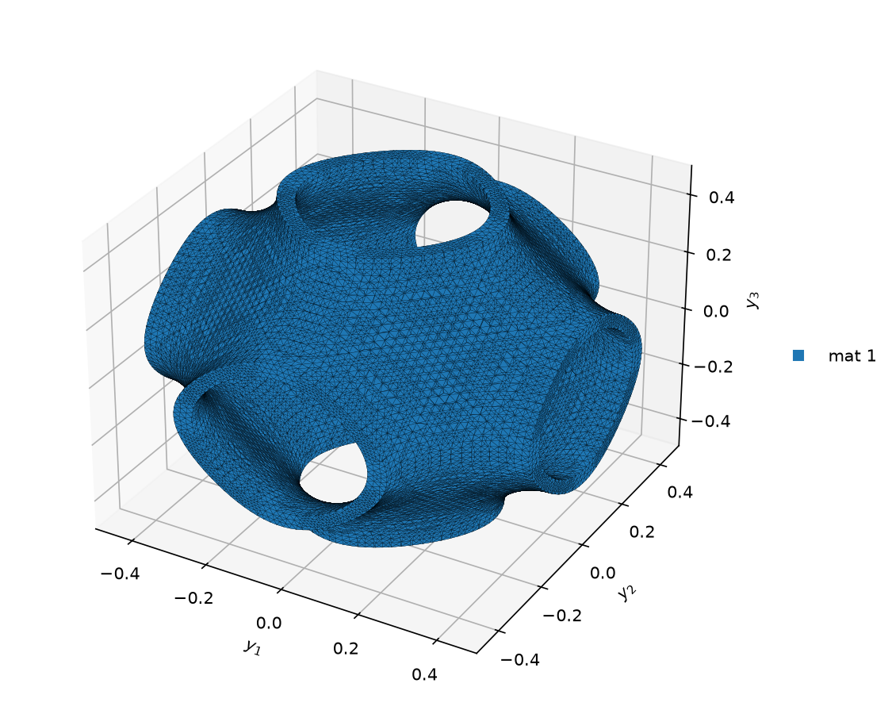

06 3-D solid homogenization#
This tutorial turns a lattice unit cell into the 6x6 stiffness of an equivalent solid.
The SG#
examples/OpenSG-solid/6_get_solid_props_from_3D_SG/sample_2/Sample_2.sc is a SwiftComp input file of a lattice
cell, a triply periodic minimal surface (TPMS) with a wall thickness. It is meshed with 54874 nodes and 191957
four-node tetrahedra. Its one material is isotropic with E = 69000 MPa and nu = 0.3.
The file states no length unit. Read its lengths in mm, the unit that goes with N and MPa. The cell is then a cube of 1 mm, from -0.5 to 0.5 mm along y1, y2 and y3. The 6x6 of a 3-D SG does not depend on the length unit.
Step 1: convert the .sc file#
Run both steps in the example folder. From the root of the repository:
cd examples/OpenSG-solid/6_get_solid_props_from_3D_SG/sample_2
opensg sc_to_yaml Sample_2.sc --n_model 3
sc_to_yaml: 3D SG, 54874 nodes, 191957 cells, 1 materials, n_model 3 -> Sample_2.yaml/.msh
--n_model 3 asks for the 3-D solid model. The command writes Sample_2.yaml, the SG yaml, and Sample_2.msh,
the same mesh for gmsh. The yaml, cut to a few lines of each block:
n_model: 3 # 1 = beam, 2 = plate, 3 = solid -- the macro model this SG homogenizes to
refined: 0 # 0 = classical (plate ABD / beam EB); 1 = shear-refined (plate ABDG / beam Timoshenko)
msg: solid # the ENGINE this SG belongs to (opensg_solid); `opensg <yaml>` dispatches on it
nodes:
- [0.176255787015, 0.127118644068, 0.483050847458]
- [0.161674196865, 0.14406779661, 0.483050847458]
...
cells:
- [46248, 49435, 48078, 53059]
- [46144, 46783, 28785, 50189]
...
mat_id: [1, 1, 1, 1, 1, 1, 1, 1, 1, 1, 1, 1, 1, 1, 1, 1, 1, 1, 1, 1, 1, 1, 1, 1, 1,
...
materials:
1:
type: 0
E: 69000.0
nu: 0.3
Step 2: homogenize#
opensg Sample_2.yaml
============================================================================
OpenSG -- a multiscale structural analysis tool based on the Mechanics of
Structure Genome (MSG), developed by the Multiscale Structural Mechanics
Group led by Prof. Wenbin Yu at Purdue University
============================================================================
input : .../sample_2/Sample_2.yaml
msg : solid (3D SG- tet4)
dofs : 164622
analysis : homo
macro : 3-D solid, classical
frames : none in the file (material angle only)
solver : direct
Cauchy Continuum Stiffness Matrix [11 22 33 23 13 12]:
[[ 2.30316e+03 1.61213e+03 1.61214e+03 1.15917e-02 3.01468e-02
3.54422e-02]
[ 1.61213e+03 2.30307e+03 1.61212e+03 -1.27990e-02 -2.46110e-02
-4.76365e-02]
[ 1.61214e+03 1.61212e+03 2.30302e+03 -1.35808e-02 1.07220e-01
2.99844e-02]
[ 1.15917e-02 -1.27990e-02 -1.35808e-02 1.10673e+03 -5.59546e-03
5.93277e-03]
[ 3.01468e-02 -2.46110e-02 1.07220e-01 -5.59546e-03 1.10667e+03
1.31423e-02]
[ 3.54422e-02 -4.76365e-02 2.99844e-02 5.93277e-03 1.31423e-02
1.10666e+03]]
Homogenization stored in Sample_2.out
Time taken: 22.34 sec
The run writes Sample_2.out and Sample_2_mesh.png. The picture labels its axes y1, y2 and y3:


Read the .out#
The run replaces the Sample_2.out that ships in the folder. The shipped file holds the same law in Pa: its
stiffness is 10^6 times the one below. This is the new one, Sample_2.out:
OpenSG msg-solid 3D elastic model, omega 1, periodic
The Effective Cauchy Continuum Stiffness Matrix
--------------------------------------------
2.3031598E+003 1.6121296E+003 1.6121409E+003 1.1591715E-002 3.0146790E-002 3.5442225E-002
1.6121296E+003 2.3030673E+003 1.6121202E+003 -1.2798992E-002 -2.4610987E-002 -4.7636488E-002
1.6121409E+003 1.6121202E+003 2.3030185E+003 -1.3580840E-002 1.0721967E-001 2.9984433E-002
1.1591715E-002 -1.2798992E-002 -1.3580840E-002 1.1067345E+003 -5.5954582E-003 5.9327707E-003
3.0146790E-002 -2.4610987E-002 1.0721967E-001 -5.5954582E-003 1.1066684E+003 1.3142312E-002
3.5442225E-002 -4.7636488E-002 2.9984433E-002 5.9327707E-003 1.3142312E-002 1.1066643E+003
The Effective Cauchy Continuum Compliance Matrix
--------------------------------------------
1.0251034E-003 -4.2208054E-004 -4.2212712E-004 -2.0797670E-008 3.5867465E-009 -3.9561286E-008
-4.2208054E-004 1.0251588E-003 -4.2215290E-004 1.1096119E-008 7.5195778E-008 6.9082739E-008
-4.2212712E-004 -4.2215290E-004 1.0252152E-003 1.2119418E-008 -9.7216623E-008 -3.2429029E-008
-2.0797670E-008 1.1096119E-008 1.2119418E-008 9.0355910E-004 4.5682078E-009 -4.8431731E-009
3.5867465E-009 7.5195778E-008 -9.7216623E-008 4.5682078E-009 9.0361302E-004 -1.0725223E-008
-3.9561286E-008 6.9082739E-008 -3.2429029E-008 -4.8431731E-009 -1.0725223E-008 9.0361640E-004
The Engineering Constants (Approximated as Orthotropic)
----------------------------------------------------------
E1 = 9.7551133E+002
E2 = 9.7545861E+002
E3 = 9.7540496E+002
G12 = 1.1066643E+003
G13 = 1.1066684E+003
G23 = 1.1067345E+003
nu12= 4.1174435E-001
nu13= 4.1178978E-001
nu23= 4.1179268E-001
Time taken: 22.34 sec
omega 1is the volume of the cell in mm^3, the bounding box of the mesh. The law is per unit volume of the cell.periodicmeans that the opposite faces of the cube are tied.The stiffness takes the strains
[e11 e22 e33 2e23 2e13 2e12]to the stresses[S11 S22 S33 S23 S13 S12], the order[11 22 33 23 13 12]that the run prints. Axes 1, 2 and 3 run along y1, y2 and y3. The stiffness is in MPa, the unit of the material.The compliance is the inverse of the stiffness, in 1/MPa.
The engineering constants are read from the compliance, as for an orthotropic material: E and G in MPa, nu without a unit.
What the numbers say:
The cell is cubic. C11, C22 and C33 agree to four digits, as do C44, C55 and C66, and C12, C13 and C23.
The couplings between the normal and the shear terms are below 0.11 MPa, against 2303 MPa on the diagonal.
E1 = 975.5 MPa is 1.4 % of the E of the material. The tetrahedra fill 8.57 % of the cell.
Go back to the root of the repository before the next tutorial:
cd ../../../..